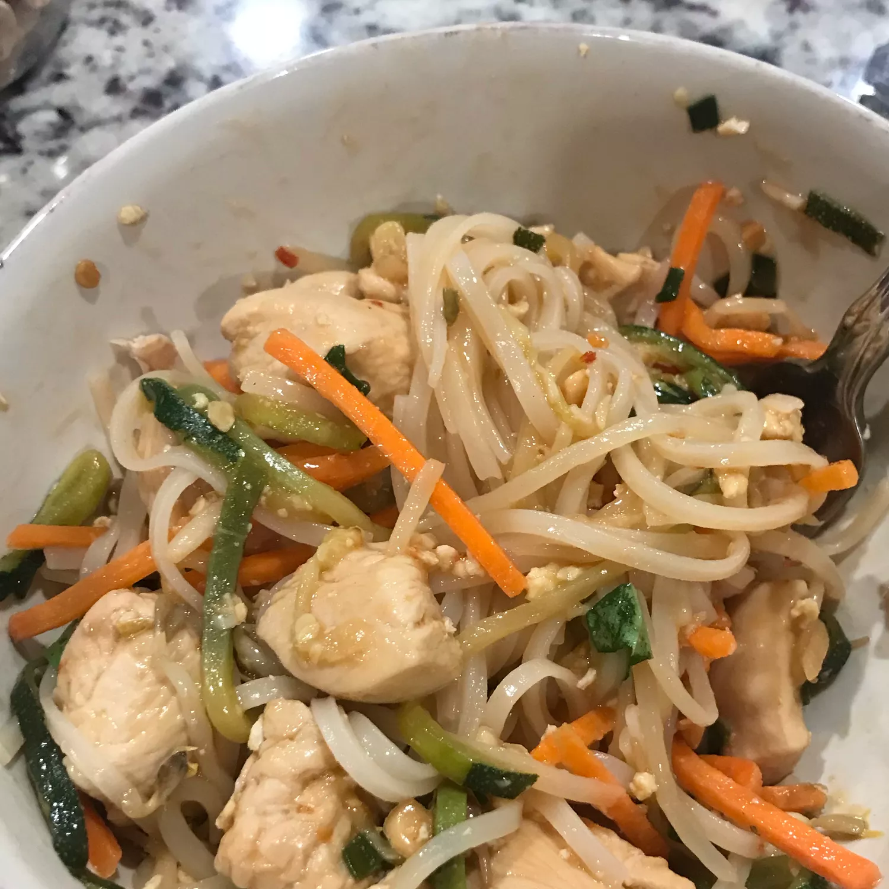

Zucchini Noodles

Description
Healthier version of Pad Thai, using zucchini in place of regular noodles
Note: you'll need a spiralizer to turn the zucchini into noodles
Creates 4 servings
Ingredients
- 3 large zucchini
- ¼ cup chicken stock
- 2 ½ tablespoons tamarind paste
- 2 tablespoons low-sodium soy sauce
- 2 tablespoons oyster sauce
- 1 ½ tablespoons Asian chile pepper sauce
- 1 tablespoon Worcestershire sauce
- 1 tablespoon fresh lime juice
- 1 tablespoon white sugar
- 2 tablespoons sesame oil
- 1 tablespoon chopped garlic
- 12 ounces skinless, boneless chicken breasts, cut into 1-inch cubes
- 8 ounces peeled and deveined shrimp
- 2 eggs, beaten
- 2 tablespoons water, or as needed (Optional)
- 3 cups bean sprouts, divided
- 6 green onions, chopped into 1-inch pieces
- 2 tablespoons chopped unsalted dry-roasted peanuts
- ¼ cup chopped fresh basil
Steps
- Make zucchini noodles using a spiralizer.
- Whisk chicken stock, tamarind paste, soy sauce, oyster sauce, chile pepper sauce, Worcestershire sauce, lime juice, and sugar together in a small bowl to make a smooth sauce.
- Heat sesame oil in a wok or large skillet over high heat. Add garlic and stir until fragrant, about 10 seconds. Add chicken and shrimp; cook and stir until chicken is no longer pink in the center and the juices run clear, 5 to 7 minutes.
- Push chicken and shrimp to the sides of the wok to make a space in the center. Pour eggs and scramble until firm, 2 to 3 minutes. Add zucchini noodles and sauce; cook and stir, adding water if needed, about 3 minutes. Add 2 cups bean sprouts and green onions; cook and stir until combined, 1 to 2 minutes.
- Remove wok from heat and sprinkle peanuts over noodles. Serve garnished with remaining 1 cup bean sprouts and fresh basil.